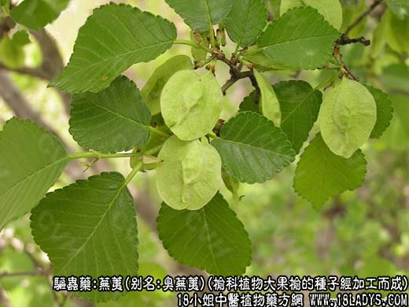
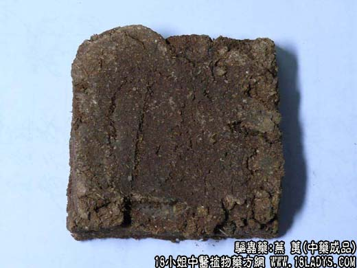
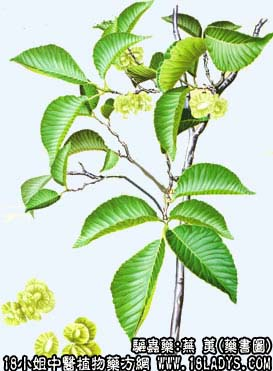

本品为少常用中药。始载《名医别录》，列为中品。《本草纲目》列入木部乔木类，李时诊谓："芜荑有大小两种，入药皆用大芜荑”。
别名：臭芜荑。
来源：为榆科植物大果榆的种子经加工而成。多为野生。
植物形态：落叶乔木或小灌木，小枝淡黄褐色，初有柔毛，后脱落，具木栓质翅（似鬼箭羽）。叶互生、阔倒卵形或椭圆形，长4～8厘米，两面有短硬毛，边缘有单锯齿或重锯齿，先端突尖。花先叶开放，5～6朵簇生。翅果特大，长2.5厘米左右，倒卵形，被有长毛；种子位于翅果中央，卵圆形，富油质。
产地：主产于山西、河北、北京等地。
采收加工：春末夏初，当果实成熟时采集，晒干。
处方：山榆树子27.5kg、家榆树皮粉5kg、红土15kg、菊花末2.5kg。
制法：1、先将大果榆的果实揉去膜翅，取出种子，待用。2、取大果榆的种子27.5kg，置容器内，加入温水浸泡，待发酵后，兑入家榆树皮粉等辅料（如水不足可酌加适量温开水），混合均内，搅拌成糊状。取出，放席上摊平，厚约1.3厘米，切成7厘米的方块，晒干即得。（河北制法）。
性状鉴别：呈扁方形块状。表面棕黄色。质地松泡，断面粗糙，其中杂有多数纤维，可见扁圆形富油质的种子。有特异臭气，夹杂有奶酪腐败之气，味酸略膻。以方块形，完整无碎者为佳。
主要成分：含鞣酸、醣等。
功效与作用：杀虫消积。
炮制：生用
性味：辛、苦、温。
归经：入脾、胃经。
功能：杀虫，消积。
主治：虫积腹痛，小儿疳积。南方地区烧烟。辟山岚障气。
临床应用：多用于小儿疳积、虫痛（蛔虫），但药力单薄，须配榧子肉、槟榔、川连、木香等以助杀虫、健胃、止痛，方如芜荑汤。
用量：3～9g。
处方举例：芜荑汤：芜荑6g，榧子肉7粒，槟榔9g，川连2.4g，木香4.5g，水煎服。